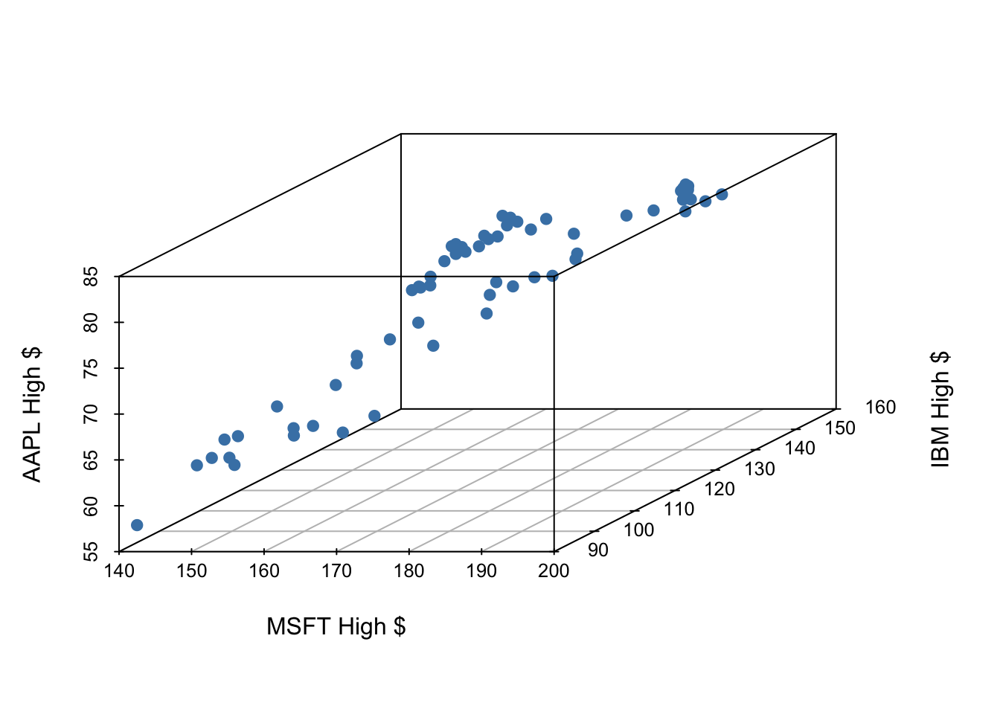
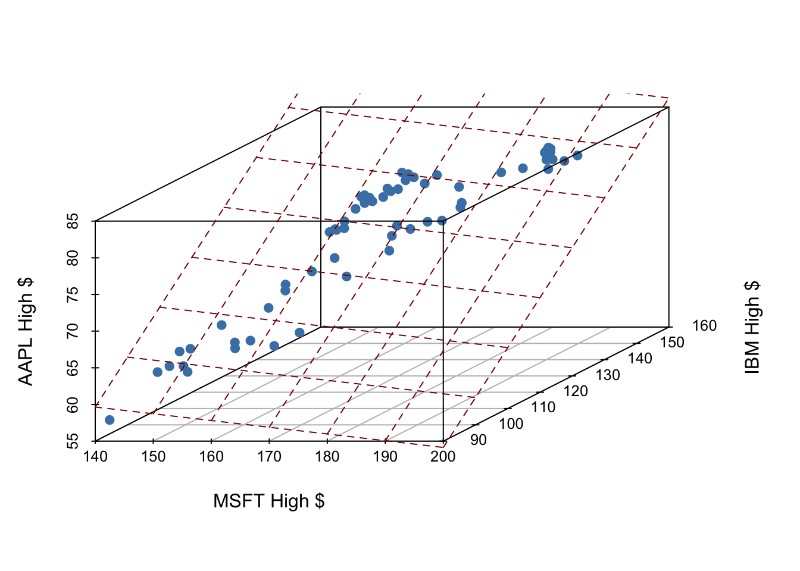

library(tidyverse)
library(tidymodels)
library(scatterplot3d)Linear regression II
STA 101
Bulletin
- Lab 3 due Thursday
- Exam 1 released Thursday and due Monday
- check out practice and sakai solutions
- no TA office hours Friday/Monday
- ask questions early
- Looking towards next week, please fill out this optional form to request group members (from your lab) to work on the projects with.
Recap (warmup)
From last time…
What is \(\hat{y}\)? How is it different than \(y\)?
What is \(\hat{\beta}\)? How is it different than \(\beta\)?
What is a residual? How is it different than error?
Today
By the end of today you will…
- compute \(R^2\) and use it to select between models
- understand the geometric picture of multiple linear regression
- be able to build, fit and interpret linear models with \(>1\) predictor
Getting started
Download this application exercise by pasting the code below into your console (bottom left of screen)
download.file("https://sta101-fa22.netlify.app/static/appex/ae7.qmd",
destfile = "ae7.qmd")Load packages and data
Today’s data is a collection of tech stock prices from January 1st 2020 to December 31st 2021. I pulled this data off Yahoo finance using their API via the tidyquant package July 2022.
stocks = read_csv("https://sta101-fa22.netlify.app/static/appex/data/stocks2.csv")Notes
\(R^2\) and checking model fit
Conceptual introduction
\(R^2\), aka “the coefficient of determination” or “correlation squared” is a way to see how well a given model fits the data. Formally,
\[ R^2 = 1 - \frac{\sum_i r_i^2}{\sum_i (y_i - \bar{y})^2} \]
where \(\bar{y}\) is the mean of all y values.
In words,
\[ R^2 = 1 - \frac{\text{sum of squared residuals}}{\text{sum of outcome squared distance from the mean}} \]
Let’s focus on the word version to build intuition.
The sum of squared residuals is a measure of how wrong our model is (how much our model doesn’t explain)
The denominator is proportional to the average square distance from the mean, i.e. the variance, i.e. the amount of variability in the data.
Together, the fraction represents the proportion of variability that is not explained by the model.
If the sum of squared residuals is 0, then the model explains all variability and \(R^2 = 1 - 0 = 1\).
Similarly if the sum of squared residuals is the same as all the variability in the data, then model does not explain any variability and \(R^2 = 1 - 1 = 0\).
Final take-away: \(R^2\) is a measure of the proportion of variability the model explains. An \(R^2\) of 0 is a poor fit and \(R^2\) of 1 is a perfect fit.
How to find \(R^2\)
To find \(R^2\) simply call the function glance() on your modelFit, e.g.
modelFit = linear_reg() %>%
set_engine("lm") %>%
fit(outcome ~ predictor, data = data_set)
glance(modelFit)Two predictor main effects model and notation
\[ y = \beta_0 + \beta_1 x_1 + \beta_2 x_2 + \epsilon \]
\(y\): the outcome variable. Also called the “response” or “dependent variable”. In prediction problems, this is what we are interested in predicting.
\(x_i\): the \(i^{th}\) predictor. Also commonly referred to as “regressor”, “independent variable”, “covariate”, “feature”, “the data”.
\(\beta_i\): “constants” or coefficients i.e. fixed numbers. These are population parameters. \(\beta_0\) has another special name, “the intercept”.
\(\epsilon\): the error. This quantity represents observational error, i.e. the difference between our observation and the true population-level expected value: \(\beta_0 + \beta_1 x\).
Effectively this model says our data \(y\) is linearly related to the \(x_1\) and \(x_2\) but is not perfectly observed due to some error.
A simple example
Let’s examine the first quarter of 2020 high prices of Microsoft, IBM and Apple stocks to illustrate some ideas.

If we have three measurements (variables) then each observation is a point in three-dimensional space. In this example, we can choose one of our measurements to be the outcome variable (e.g. Apple stock price) and use our other two measurements (MSFT and IBM price) as predictors.
In general, the total number of measurements, i.e. variables (columns) in our linear model represents the spatial dimension of our model.
Our fitted linear model no longer looks like a line, but instead looks like a plane.

This plane shows our prediction of AAPL price (\(y\)) given both MSFT price (\(x_1\)) and IBM price (\(x_2\))
Demo: building intuition for higher dimensional linear models
Exercise 1
In \(n\)-dimensional space, a linear equation creates a \(\text{insert number here}\)-dimensional object.
Fitting a multiple regression model in R
Find the equation of the plane above with this one simple trick!
myModelFit = linear_reg() %>%
set_engine("lm") %>%
fit(outcome ~ predictor1 + predictor2 + predictor3 + ..., data = data-set-here)we can simply ‘add’ in new predictors! This code template will fit the model according to the ordinary least squares (OLS) objective function, i.e. we are finding the equation of the hyperplane that minimizes the sum of squared residuals.
You can subsequently print the coefficients (\(\beta\)s) to the screen by simply typing the model name, e.g. myModelFit or calling the tidy() function on your fitted model, e.g. tidy(myModelFit).
Exercise 2
In the code chunk below, fit the multiple regression model described above where
\(y\): AAPL high price, \(x_1\): MSFT high price, \(x_2\): IBM high price.
Then write the equation of your fitted model below.
- Note: you should change the name of “myModelFit” to be something more meaningful, e.g.
apple_high_fit
# code here The equation of the plane above:
\[ \text{your equation here} \]
Exercise 3
Interpret the coefficients in your equation above.
[your interpretation here]
A better model
Log return
Applying a model to values outside of the original data is called extrapolation. Extrapolation can be very unreliable.
That being noted, it would be nice if our model was only able to predict realistic outcomes. If we consider extrapolating our forecast, we will see that our linear model can easily predict unrealistic values. For example, with a negative slope, we can imagine that a very high Microsoft price drives our Apple prediction down to a negative value.
However, stock prices cannot be negative. A more useful modeling framework used by investors is to predict the “log return” of a stock. Over the course of day, the log return is defined:
\[ \log(\text{close price}) - \log(\text{open price}) = \log \left( \frac{\text{close price}}{\text{open price}} \right) \]
Exercise 4
Starting with your stocks data frame, create new columns AAPL.LogReturn, MSFT.LogReturn, IBM.LogReturn that shows the daily log return of each stock. Continue this for the remaining stocks in the data frame. Save your new data frame as stock_returns.
# code hereExercise 5
Fit the following model:
\[ y = \beta_0 + x_1 \beta_1 + x_2 \beta_2 + \epsilon \] where
- \(y\): AAPL daily log return
- \(x_1\): MSFT daily log return
- \(x_2\): IBM daily log return
and report \(R^2\).
# code here Predicting the future
So far we’ve only used the present to predict the present. i.e. we’ve used January 1st IBM prices to predict January 1st AAPL prices. While the resulting models are quite good, they are not particularly useful.
It would be much more useful if we could predict the return of AAPL tomorrow so that we could make an informed decision about buying or selling it.
To begin such an endeavor, let’s build a model that uses yesterday’s log-return of IBM and MSFT to predict today’s log return of AAPL.
Exercise 6
What should our data frame look like?
[ your answer here ]
Let’s make that data frame! Adapt the example below to create new columns for yesterday’s IBM and MSFT returns.
stock_returns2 = stock_returns %>%
mutate(AAPL.LogReturnYesterday = lag(AAPL.LogReturn, 1)) %>%
filter(!is.na(AAPL.LogReturnYesterday))
stock_returns2Exercise 7
Fit the following model:
\[ y = \beta_0 + x_1 \beta_1 + x_2 \beta_2 + \epsilon \]
where
\(y\): AAPL daily log return \(x_1\): MSFT log return yesterday \(x_2\): IBM log return yesterday
and report \(R^2\). What do you notice?
# code here